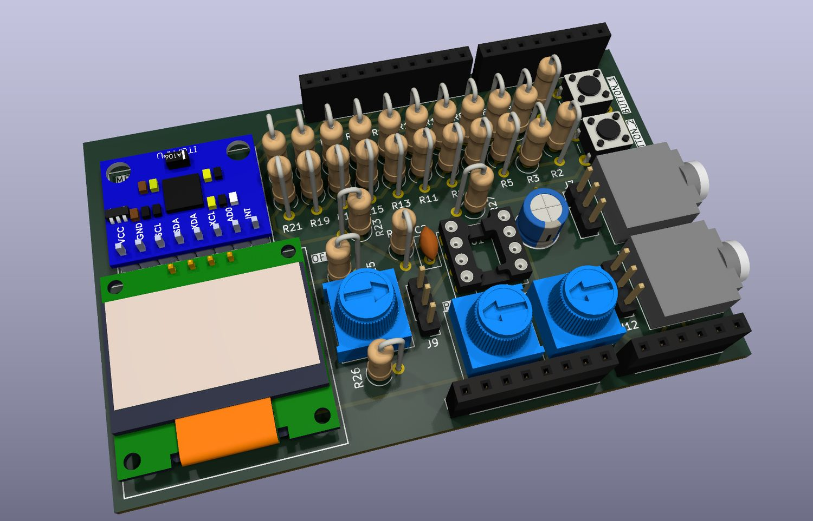
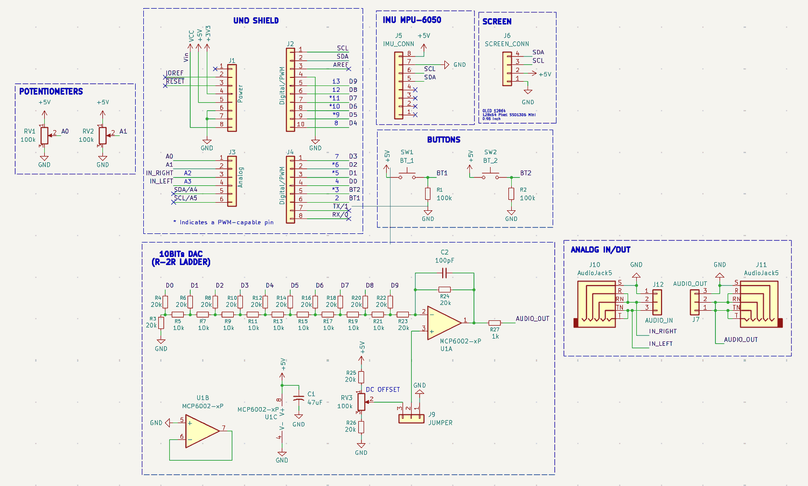
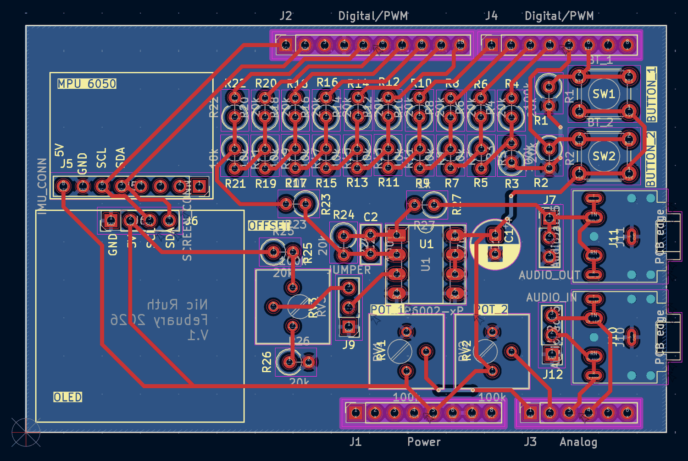

PCB Design · Mixed Signal
Arduino Uno I/O Shield

- Form factor
- Arduino Uno shield
- DAC
- 10-bit R-2R ladder, 10 kΩ / 20 kΩ, on D0–D9
- Output buffer
- MCP6002 rail-to-rail op-amp, 100 pF feedback cap
- Analog I/O
- Two 3.5 mm jacks — line in to A2 / A3, buffered line out
- Sensing
- MPU6050 IMU header (I²C)
- Display
- SSD1306 128 × 64 OLED header (I²C)
- Controls
- Two 100 kΩ pots to A0 / A1, two buttons, DC-offset trimmer
- Tool
- KiCad
Giving a digital board an analog voice
An Arduino Uno cannot produce an analog voltage. Its
analogWrite is PWM — a square wave switching between
0 V and 5 V, which sounds like a square wave and measures like one.
For anything that actually wants a varying voltage, you need a
digital-to-analog converter, and the Uno hasn't got one.
This shield builds one out of resistors. Ten digital pins, D0 through D9, feed an R-2R ladder made from nothing but 10 kΩ and 20 kΩ values. Each rung contributes half the weight of the one above it, so writing a 10-bit number to those pins produces a voltage proportional to it — 1024 steps out of two resistor values and no dedicated DAC chip anywhere on the board.
Why the ladder needs a buffer
An R-2R ladder has a real output impedance, which means anything you connect to it becomes part of the divider. Plug in a speaker or a scope probe with modest input impedance and the voltage you carefully computed sags — the ladder's accuracy is only as good as the load's willingness to leave it alone.
So the ladder feeds an MCP6002, a rail-to-rail op-amp wired as a buffer. It presents a very high impedance to the ladder and a very low one to whatever comes next, which decouples the two completely. A 100 pF cap across the feedback path rolls off the top end and takes the edge off the step transitions on the way out.
A second trimmer sets a DC offset through a jumper, so the output can be centred where the next stage wants it rather than sitting on whatever the ladder happens to produce at code zero.
Jacks instead of jumper wires
Both ends of the analog path terminate in 3.5 mm jacks — line in routed to analog pins A2 and A3, buffered line out on its own connector. It's a small choice with an outsized effect: the board plugs into ordinary audio gear with a cable anyone already owns, instead of requiring a fresh improvisation of jumper wires and alligator clips every session.
The rest of the board is the supporting cast that stops a breadboard being rebuilt each time — two 100 kΩ pots on A0 and A1, two buttons with pull-downs, and headers for an MPU6050 IMU and a 128 × 64 SSD1306 OLED, both on the same I²C bus.


Related work
This is one of two Uno-format boards I've designed — the other being the DemoSat balloon payload, which uses the same shield footprint to carry a sensor stack instead.